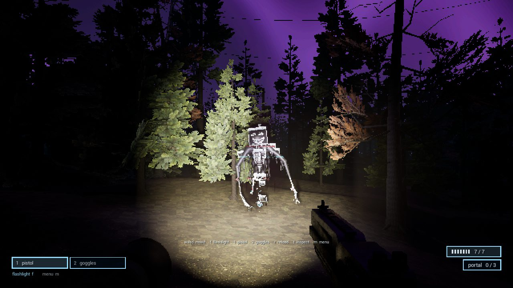
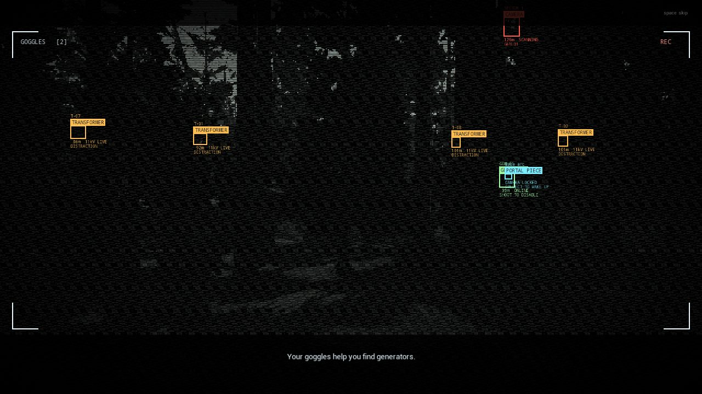
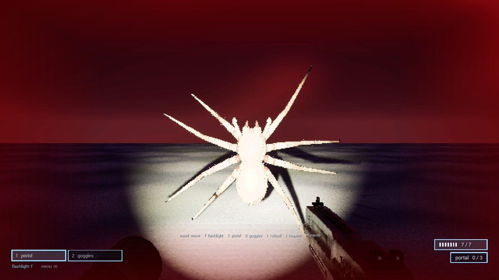
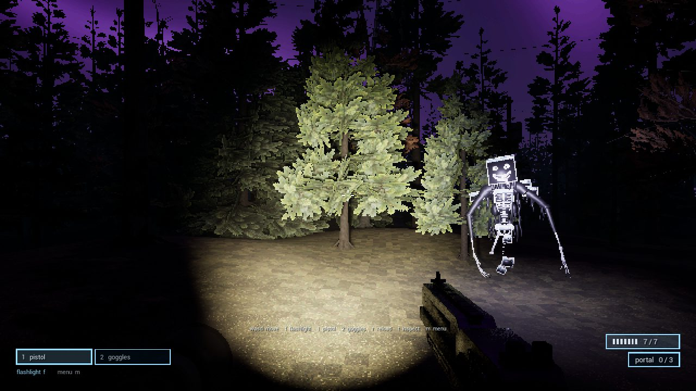
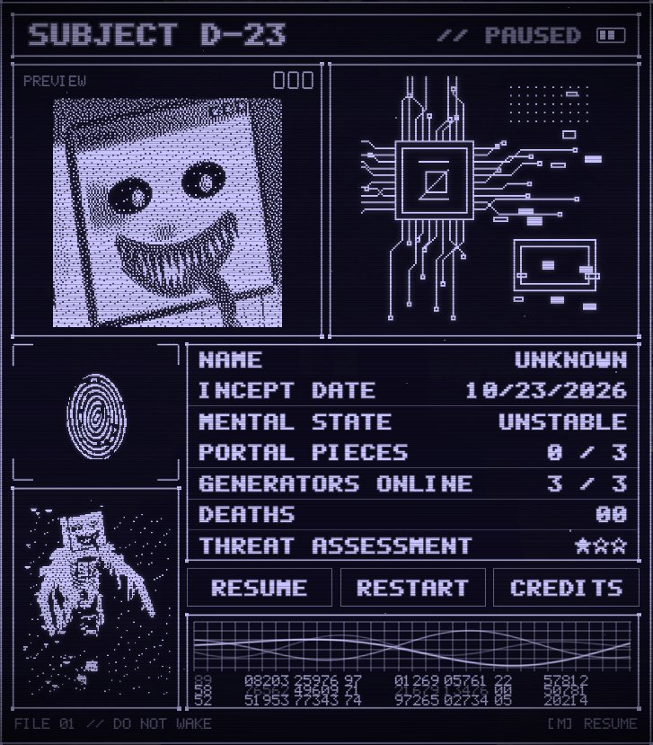

STUCK IN A DREAM

Unzip it and run HorrorGameJam10_23.exe. Windows may say it protected your PC (the game isn't signed): click More info, then Run anyway.
THE FILE
You fell asleep and woke up in a forest that never ends, under a swirling purple sky. Three pieces of a portal are your only way out, and each one is locked behind a surveillance camera fed by a generator. Use your goggles to find the generators, shoot them, and take the pieces. Drones hunt you, spiders leap for your face, and something made of tar and old computer windows follows you through the trees. Don't keep looking at it.
SURVEILLANCE STILLS




CONTROLS
REQUIREMENTS
It's an Unreal Engine 5 game, and those can't run inside a web browser, so this page hands you the download instead.
CREDITS
Made by Claude and ChatGPT for a 48-hour horror game jam, in Unreal Engine 5. Sound effects and music from Pixabay, used under the Pixabay Content License:
Single Gunshot 5.4 by morganpurkis (Freesound) · Short energy beam shot (3) by Yodguard · HTF Flesh Impact 1 by RAGECore29 · Horror Ambient by leberch · Drone Noise 01 by Alex_Jauk · MGS detected lead by jobro (Freesound) · Angry Hissing Cockroach by Kuzu420 · Scare by MagiaZ · Footsteps Dirt Gravel by revolt2563 (Freesound) · Glitch sound by Axel_Sounds.
All other sounds were synthesized for the game.